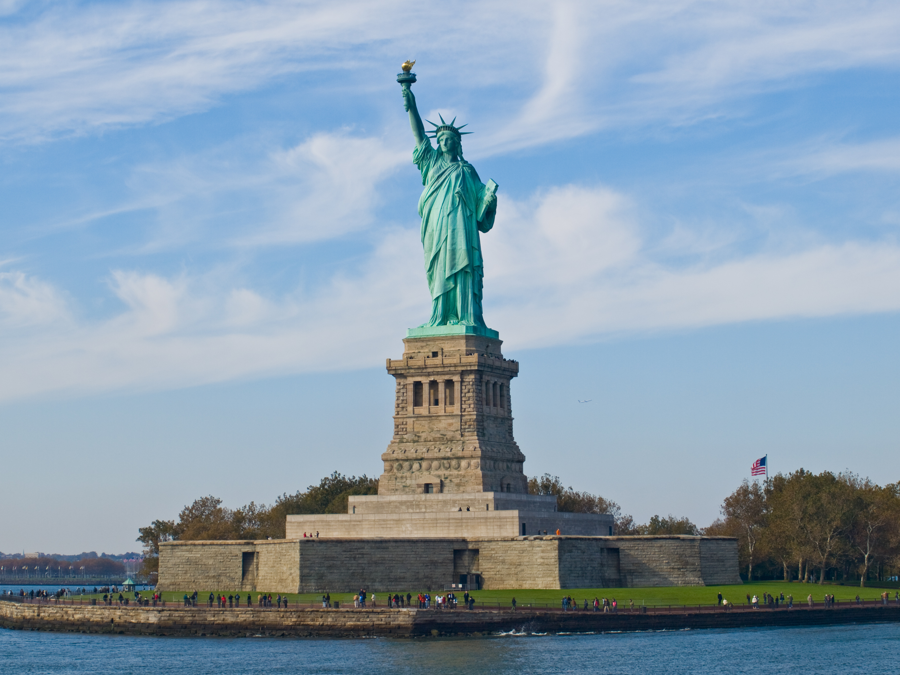

Estados Unidos |
|
Os Estados Unidos da América são umarepública constitucional federal composta por 50 estados e umdistrito federal. A maior parte do país situa-se na região central daAmérica do Norte, formada por 48 estados e Washington, D.C., o distrito federal da capital. Banhado pelos oceanos Pacífico eAtlântico, faz fronteira com o Canadá ao norte e com o México ao sul. O estado do Alasca está no noroeste do continente, fazendo fronteira com o Canadá no leste e com a Rússia a oeste, através do estreito de Bering. O estado do Havaí é um arquipélago no Pacífico Central. O país também possui vários outros territórios no Caribe e no Oceano Pacífico. Com 9,37 milhões de km 2 de área e uma população de mais de 300 milhões de habitantes, o país é o quarto maior em área total, o quinto maior em área contígua e o terceiro empopulação. Os Estados Unidos são uma das nações maismulticulturais e etnicamente diversas do mundo, produto da forteimigração vinda de muitos países. Sua geografia e sistemas climáticos também são extremamente diversificados, com desertos, planícies, florestas e montanhas que abrigam uma grande variedade de espécies. Os paleoindígenas que migraram da Ásia há quinze mil anos, habitam o que é hoje o território dos Estados Unidos até os dias atuais. Estapopulação nativa foi muito reduzida após o contato com os europeusdevido a doenças e guerras. Os Estados Unidos foram fundados pelas treze colônias do Império Britânico localizadas ao longo da suacosta atlântica. Em 4 de julho de 1776, foi emitida a Declaração de Independência, que proclamou o seu direito à autodeterminação e a criação de uma união cooperativa. Os estados rebeldes derrotaram aGrã-Bretanha na Guerra Revolucionária Americana, a primeira guerra colonial bem sucedida da Idade Contemporânea. AConvenção de Filadélfia aprovou a atual Constituição dos Estados Unidos em 17 de setembro de 1787; sua ratificação no ano seguinte tornou os estados parte de uma única república com um forte governo central. A Carta dos Direitos, composta por dez emendas constitucionais que garantem vários direitos civis e liberdades fundamentais, foi ratificada em 1791. Guiados pela doutrina do destino manifesto, os Estados Unidos embarcaram em uma vigorosa expansão territorial pela América do Norte durante o século XIXque resultou no deslocamento de tribos indígenas, aquisição de territórios e na anexação de novos Estados. Os conflitos entre o sul agrário e o norte industrializadodo país sobre os direitos dos estados e a expansão da instituição da escravatura provocaram a Guerra de Secessão, que decorreu entre 1861 e 1865. A vitória do Norte impediu a separação do país e levou ao fim da escravatura nos Estados Unidos. No final do século XIX, sua economia tornou-se a maior do mundo e o país expandiu-se para o Pacífico. A Guerra Hispano-Americana e a Primeira Guerra Mundial confirmaram o estatuto do país como uma potência militar. A nação emergiu da Segunda Guerra Mundial como o primeiro país com armas nucleares e como membro permanente do Conselho de Segurança das Nações Unidas. O fim da Guerra Fria e a dissolução da União Soviética deixaram-no como a única superpotênciarestante. Os Estados Unidos são um país desenvolvido e formam a maior economia nacional do mundo, com um produto interno bruto que em 2012 foi de 15,6 trilhões de dólares, equivalente a 19% do PIB mundial por paridade do poder de compra (PPC) de 2011. Sua renda per capita era a sexta maior do mundo em 2010, no entanto o país é o mais desigual dos membros da Organização para a Cooperação e Desenvolvimento Econômico (OCDE), conforme calculado pelo Banco Mundial. Sua economia é alimentada pela abundância de recursos naturais, por uma infraestrutura bem desenvolvida e pela alta produtividade; e, apesar de ser considerado uma economia pós-industrial, o país continua a ser um dos maiores fabricantes do mundo.[16] Os Estados Unidos respondem por 39% dos gastos militares do planeta[17] e são um forte líder econômico, político e cultural
 |